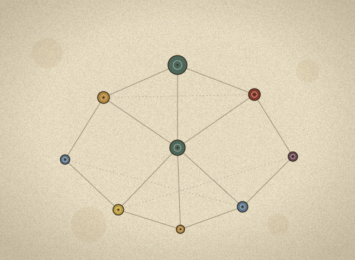

Active · anchor
Post-Cognitive Design & Computing
Our founding programme. It studies how cognition and computation extend beyond the individual mind and the digital machine — across people, artefacts, and environments — and how knowledge is represented and encoded in data, with a view to designing computational systems inspired by collective cognition. It also relates phenomenological philosophy to computation: how computational artefacts mediate perception and action, and where the formal, representational account of machine intelligence reaches its limits.
Research outcomes
Systemic Design Through the Lens of Distributed Cognition · RSD13 Proceedings, 2024
Simulating AI-enabled Services Using a Human Element · Touchpoint Vol. 11 No. 2, 2020
Embodied Intelligence: Alternative Computing Practices for a Contingent World · Workshop accepted at EKSIG 2025
Further work under peer review.
Simulating AI-enabled Services Using a Human Element · Touchpoint Vol. 11 No. 2, 2020
Embodied Intelligence: Alternative Computing Practices for a Contingent World · Workshop accepted at EKSIG 2025
Further work under peer review.
